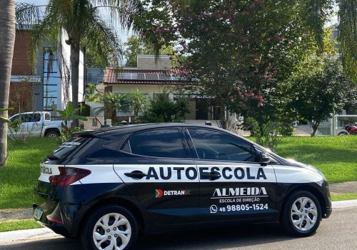
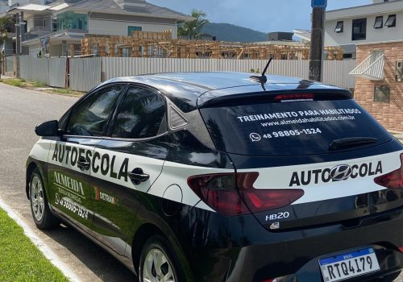

01Novidade
Quero tirar minha primeira habilitação
Preparação prática para quem está começando e quer construir segurança desde a primeira aula.
Quero começar ↗Da primeira habilitação à volta ao volante: aulas práticas, personalizadas e no seu ritmo, com instrutor credenciado.
Preparação prática para quem está começando e quer construir segurança desde a primeira aula.
Quero começar ↗Treinamento para recém-habilitados, quem ficou sem dirigir ou convive com medo e ansiedade.
Recuperar minha confiança ↗Para quem está começando e precisa desenvolver controle, atenção e segurança em situações reais de trânsito.
Saber mais ↗Prática real para transformar a CNH recém-conquistada em experiência, autonomia e tranquilidade no dia a dia.
Condução calma e personalizada para controlar o nervosismo e evoluir gradualmente, sem pressa ou pressão.
Revisão de técnicas, atualização das regras e treino progressivo para quem ficou muito tempo sem dirigir.
Habilidades básicas, manobras e rotas da sua rotina para você dirigir com independência e tranquilidade.
Não existe uma quantidade igual de aulas para todo mundo. A experiência começa com uma avaliação e se adapta ao seu nível, seus objetivos e à sua rotina.
Agendar avaliaçãoEntendemos sua experiência, suas dificuldades e o que você precisa conquistar.
Definimos o ritmo e os treinos mais adequados para a sua evolução.
Ruas, avenidas, estacionamentos, rodovias e até rotas que fazem parte do seu dia.
Acompanhamos sua evolução até você se sentir preparado para dirigir com tranquilidade.
Treinamos justamente as situações que hoje limitam a sua liberdade.
Só consegue pegar o carro quando alguém está ao lado.
O movimento das ruas tira a concentração e a confiança.
Prefere pedir carona ou andar a pé para não dirigir.
Uma experiência ruim ainda interfere na sua segurança.
Vias rápidas causam tensão e sensação de perigo.
Precisa de outras pessoas para conseguir se locomover.
Muito prazer, sou Abel Júnior de Almeida. Há mais de 5 anos ajudo pessoas a conquistarem confiança e independência ao volante.
Sou Instrutor de Trânsito formado pela Universidade de Caxias do Sul (UCS), com especialização em Gestão do Trânsito e Psicologia aplicada à segurança viária, credenciado pelos Detrans de Santa Catarina e Rio Grande do Sul.
“Minha missão é formar motoristas conscientes e seguros, transformando o medo em confiança e contribuindo para um trânsito mais humano.”
O carro de instrução é preparado para oferecer controle, conforto e tranquilidade em cada etapa.


Não encontrou o que procura? Fale diretamente com o instrutor.
Enviar uma pergunta ↗Nas ruas e avenidas da cidade, sempre de acordo com o nível e a evolução do aluno. Podemos treinar rotas do cotidiano — como o caminho do trabalho ou da faculdade — além de rodovias e estacionamentos.
Sim. Normalmente fazemos uma avaliação prévia para confirmar que o aluno está preparado para treinar com segurança no veículo particular. Também é possível usar o carro do instrutor, equipado com duplo comando e itens de segurança.
Cada pessoa tem seu tempo. Muitos alunos percebem grande evolução por volta de 10 aulas, mas o número varia conforme experiência, insegurança e frequência. A avaliação inicial ajuda a definir um plano adequado.
Sim. Relembramos técnicas, atualizamos as regras de trânsito e ajustamos cada aula à sua evolução para recuperar a confiança de forma progressiva.
Esse é um dos principais motivos que levam alunos à Almeida. As aulas seguem um ritmo calmo, com técnicas para reduzir a ansiedade e desenvolver confiança gradualmente.
Sim. A Almeida agora também oferece preparação prática para quem está começando o processo da primeira habilitação, sempre com orientação individual e foco em direção segura.
Controle do veículo, direção defensiva, manobras, leitura do trânsito e prática nas situações reais que fazem parte da sua rotina.
Os planos e pacotes são personalizados conforme seu objetivo, disponibilidade e nível de experiência. Fale conosco para receber a opção mais adequada.
Conte para a gente em qual momento você está. Vamos indicar o melhor caminho para você começar.
Falar com o instrutor